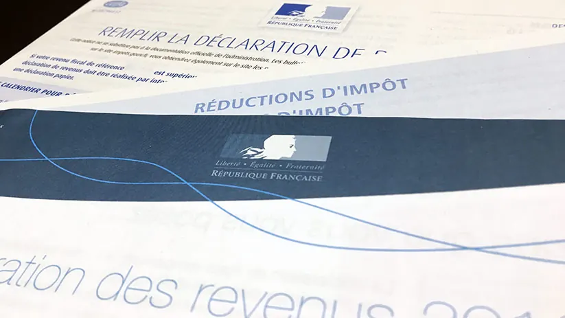

« Je recommande vivement Édith Berny pour son accompagnement en gestion de patrimoine. Elle fait preuve d'un grand professionnalisme, d'écoute et de pédagogie, ce qui permet de comprendre facilement des sujets pourtant complexes. »
Edith Berny — conseillère indépendante en gestion de patrimoine (CGP)
Accompagnement patrimonial sur mesure à Meaux (77100) et en Seine-et-Marne : épargne, retraite, immobilier, défiscalisation et transmission — avec rigueur, indépendance et discrétion.
Conseil en gestion de patrimoine — Meaux (77)
Conseillère indépendante en gestion de patrimoine, je propose un conseil en gestion de patrimoine à Meaux et dans toute la Seine-et-Marne pour particuliers, dirigeants et professions libérales.
Au sein de Maison Blanche Patrimoine, j'interviens sur les volets investissement, fiscalité et transmission, avec une approche globale tenant compte des dimensions juridiques et financières.
Mon approche privilégie la pédagogie, l'écoute et la construction d'une relation de confiance dans la durée, pour que chaque décision soit prise en pleine conscience.
Conseil en gestion de patrimoine à Meaux (77100), en Seine-et-Marne (77) et dans toute l'Île-de-France. Consultations en visioconférence ou en présentiel, selon votre préférence.
Domaines d'expertise
En tant que conseillère en gestion de patrimoine à Meaux, je conçois chaque stratégie à partir de votre situation, de vos objectifs et de votre horizon. Un accompagnement patrimonial cohérent et durable, du bilan initial au suivi dans la durée.
Résidence principale, bien locatif, LMNP, SCPI. Défiscalisation immobilière : Girardin, Malraux, Monuments historiques.
Je vous accompagne pour trouver le placement adapté à votre situation et vous faire bénéficier des avantages d'une gestion privée.
Réduire vos impôts avec des solutions adaptées, pour optimiser la structure de votre patrimoine dans la durée.

Préparer votre retraite, calculer votre pension et mettre en place des revenus complémentaires pour une situation confortable.
Protéger vos proches, préparer la transmission de votre patrimoine et anticiper les contraintes financières liées à celle-ci.
Professionnels : prêts pros, capitalisation, prévoyance. Tous publics : renégociation d'assurance emprunteur.
Ma méthode
Comprendre votre histoire, vos projets, vos contraintes et vos sensibilités avant toute recommandation.
Bilan complet de votre situation : financière, fiscale, patrimoniale, familiale et professionnelle.
Stratégie personnalisée, solutions comparées, scénarios projetés — sans conflit d'intérêts.
Mise en œuvre coordonnée, arbitrages réguliers et accompagnement dans la durée.
Témoignages clients
Avis publiés sur ma fiche Google Business — vérifiables à tout moment, sans modération de ma part.
« Je recommande vivement Édith Berny pour son accompagnement en gestion de patrimoine. Elle fait preuve d'un grand professionnalisme, d'écoute et de pédagogie, ce qui permet de comprendre facilement des sujets pourtant complexes. »
« Mme Berny prend le temps d'expliquer clairement les notions financières et les différentes options possibles, ce qui est très rassurant. Grâce à son accompagnement, j'ai pu réaliser des gains et aborder la préparation de ma retraite avec sérénité. »
« Excellente professionnelle, beaucoup de bienveillance et d'empathie. Accessible et grande disponibilité. À recommander +++++ »
Questions fréquentes
Vous ne trouvez pas la réponse ? N'hésitez pas à me contacter directement.
Poser ma question